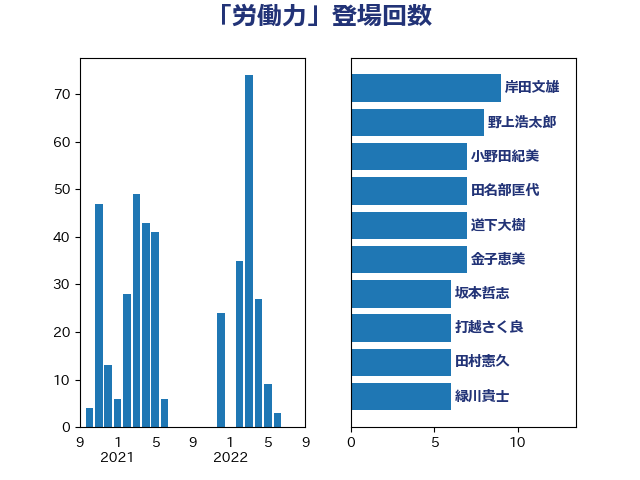

単語「労働力」

| 岸田文雄 | 自由民主党 | 9 回 |
| 野上浩太郎 | 自由民主党 | 8 回 |
| 小野田紀美 | 自由民主党 | 7 回 |
| 田名部匡代 | 立憲民主党 | 7 回 |
| 道下大樹 | 立憲民主党 | 7 回 |
| 金子恵美 | 立憲民主党 | 7 回 |
| 坂本哲志 | 自由民主党 | 6 回 |
| 打越さく良 | 立憲民主党 | 6 回 |
| 田村憲久 | 自由民主党 | 6 回 |
| 緑川貴士 | 立憲民主党 | 6 回 |
| 高橋光男 | 公明党 | 6 回 |
| 後藤茂之 | 自由民主党 | 5 回 |
| 石川香織 | 立憲民主党 | 5 回 |
| 川合孝典 | 国民民主党 | 4 回 |
| 熊野正士 | 公明党 | 4 回 |
| 葉梨康弘 | 自由民主党 | 4 回 |
| 長谷川岳 | 自由民主党 | 4 回 |
| 仁木博文 | 無所属 | 3 回 |
| 前原誠司 | 国民民主党 | 3 回 |
| 古川禎久 | 自由民主党 | 3 回 |
| 古賀友一郎 | 自由民主党 | 3 回 |
| 岸真紀子 | 立憲民主党 | 3 回 |
| 斉藤鉄夫 | 公明党 | 3 回 |
| 斎藤洋明 | 自由民主党 | 3 回 |
| 柳ヶ瀬裕文 | 日本維新の会 | 3 回 |
| 浅田均 | 日本維新の会 | 3 回 |
| 藤田文武 | 日本維新の会 | 3 回 |
| 西村康稔 | 自由民主党 | 3 回 |
| 金村龍那 | 日本維新の会 | 3 回 |
| 鈴木敦 | 国民民主党 | 3 回 |
| 音喜多駿 | 日本維新の会 | 3 回 |
| ながえ孝子 | 無所属 | 2 回 |
| 中山展宏 | 自由民主党 | 2 回 |
| 中川正春 | 立憲民主党 | 2 回 |
| 伊藤孝恵 | 国民民主党 | 2 回 |
| 住吉寛紀 | 日本維新の会 | 2 回 |
| 倉林明子 | 日本共産党 | 2 回 |
| 吉川沙織 | 立憲民主党 | 2 回 |
| 塩川鉄也 | 日本共産党 | 2 回 |
| 塩田博昭 | 公明党 | 2 回 |
| 小林鷹之 | 自由民主党 | 2 回 |
| 小沢雅仁 | 立憲民主党 | 2 回 |
| 小沼巧 | 立憲民主党 | 2 回 |
| 日下正喜 | 公明党 | 2 回 |
| 武田良太 | 自由民主党 | 2 回 |
| 池下卓 | 日本維新の会 | 2 回 |
| 河野義博 | 公明党 | 2 回 |
| 石井苗子 | 日本維新の会 | 2 回 |
| 石橋通宏 | 立憲民主党 | 2 回 |
| 舞立昇治 | 自由民主党 | 2 回 |
| 藤巻健太 | 日本維新の会 | 2 回 |
| 野田聖子 | 自由民主党 | 2 回 |
| 高木かおり | 日本維新の会 | 2 回 |
| 高橋克法 | 自由民主党 | 2 回 |
| 高階恵美子 | 自由民主党 | 2 回 |
| 麻生太郎 | 自由民主党 | 2 回 |
| 三原じゅん子 | 自由民主党 | 1 回 |
| 今井絵理子 | 自由民主党 | 1 回 |
| 勝部賢志 | 立憲民主党 | 1 回 |
| 古屋範子 | 公明党 | 1 回 |
| 吉田とも代 | 日本維新の会 | 1 回 |
| 吉田久美子 | 公明党 | 1 回 |
| 吉田忠智 | 立憲民主党 | 1 回 |
| 土田慎 | 自由民主党 | 1 回 |
| 坂井学 | 自由民主党 | 1 回 |
| 宮内秀樹 | 自由民主党 | 1 回 |
| 宮崎雅夫 | 自由民主党 | 1 回 |
| 宮路拓馬 | 自由民主党 | 1 回 |
| 小泉進次郎 | 自由民主党 | 1 回 |
| 小渕優子 | 自由民主党 | 1 回 |
| 山崎正恭 | 公明党 | 1 回 |
| 岬麻紀 | 日本維新の会 | 1 回 |
| 岸信夫 | 自由民主党 | 1 回 |
| 川田龍平 | 立憲民主党 | 1 回 |
| 市村浩一郎 | 日本維新の会 | 1 回 |
| 有村治子 | 自由民主党 | 1 回 |
| 東徹 | 日本維新の会 | 1 回 |
| 林芳正 | 自由民主党 | 1 回 |
| 枝野幸男 | 立憲民主党 | 1 回 |
| 柴田巧 | 日本維新の会 | 1 回 |
| 梅村みずほ | 日本維新の会 | 1 回 |
| 梅村聡 | 日本維新の会 | 1 回 |
| 森山浩行 | 立憲民主党 | 1 回 |
| 横沢高徳 | 立憲民主党 | 1 回 |
| 浜地雅一 | 公明党 | 1 回 |
| 牧山ひろえ | 立憲民主党 | 1 回 |
| 牧島かれん | 自由民主党 | 1 回 |
| 玉木雄一郎 | 国民民主党 | 1 回 |
| 田村まみ | 国民民主党 | 1 回 |
| 田村貴昭 | 日本共産党 | 1 回 |
| 田野瀬太道 | 無所属 | 1 回 |
| 石垣のりこ | 立憲民主党 | 1 回 |
| 礒崎哲史 | 国民民主党 | 1 回 |
| 福島みずほ | 社会民主党 | 1 回 |
| 秋野公造 | 公明党 | 1 回 |
| 稲田朋美 | 自由民主党 | 1 回 |
| 竹谷とし子 | 公明党 | 1 回 |
| 茂木敏充 | 自由民主党 | 1 回 |
| 落合貴之 | 立憲民主党 | 1 回 |
| 藤木眞也 | 自由民主党 | 1 回 |
| 赤羽一嘉 | 公明党 | 1 回 |
| 足立敏之 | 自由民主党 | 1 回 |
| 金城泰邦 | 公明党 | 1 回 |
| 鎌田さゆり | 立憲民主党 | 1 回 |
| 長友慎治 | 国民民主党 | 1 回 |
| 阿部知子 | 立憲民主党 | 1 回 |
| 青木一彦 | 自由民主党 | 1 回 |
| 須藤元気 | 無所属 | 1 回 |
| 馬場伸幸 | 日本維新の会 | 1 回 |
| 高良鉄美 | 無所属 | 1 回 |
| 齋藤健 | 自由民主党 | 1 回 |